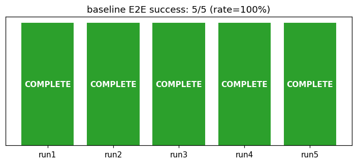
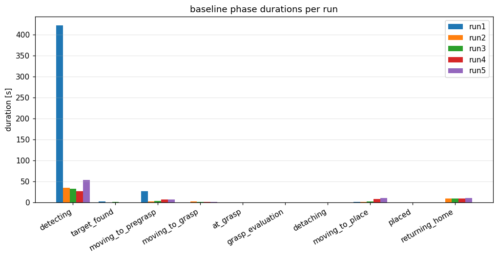
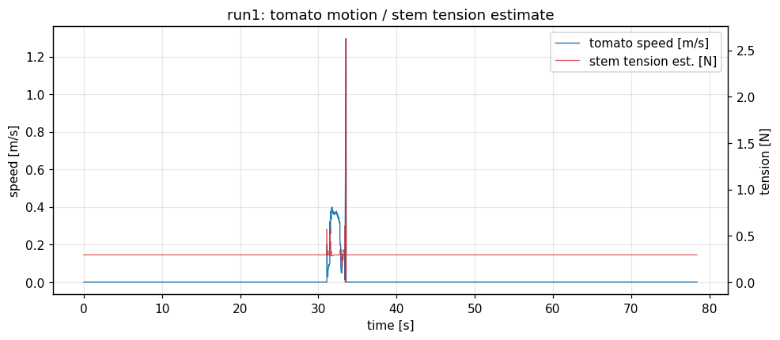
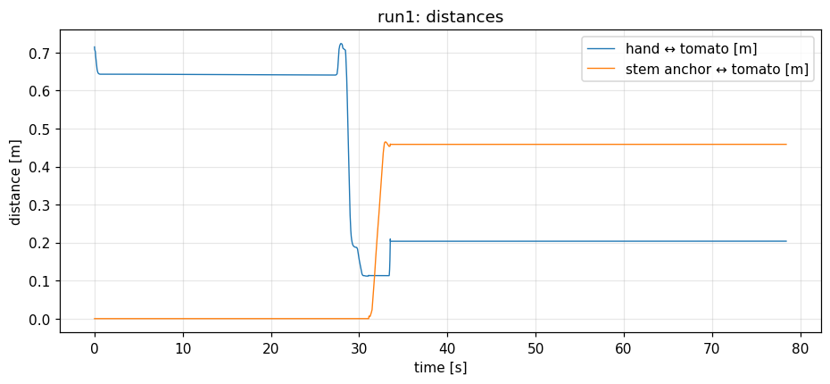
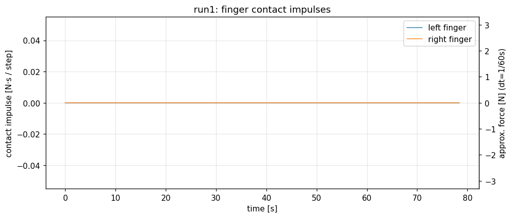
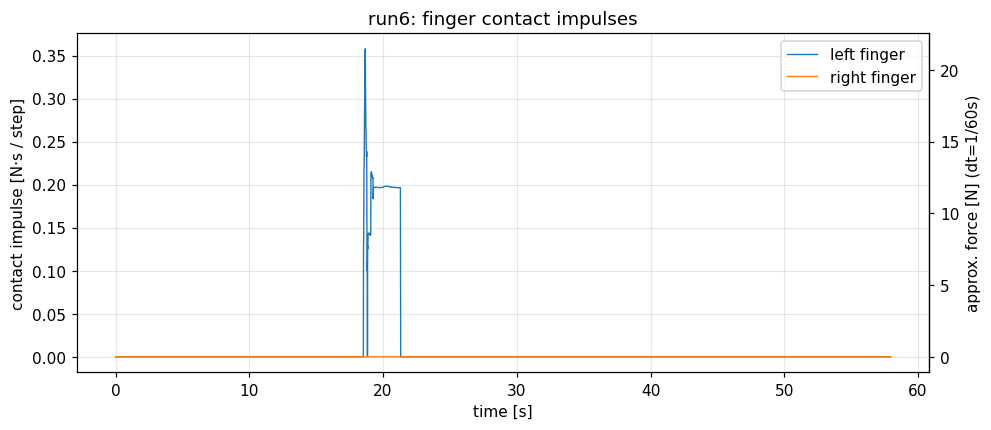

| Issue #1 の完了条件 | 結果 | 判定 |
|---|---|---|
| 既存テスト全通過・シミュ挙動変更なし | Python 95 件（新規 7 件含む）+ C++ 5 件 通過。観測コードは TOMATO_HARVEST_DEBUG_PHYSICS_GRASP 有効時のみ動作 | PASS |
| 接触力・トマト速度・hand 相対変位の数値出力 | [PhysicsObs] 行として毎ステップ出力（run1〜6 で計 3 万行超を取得） | PASS |
| 接触力の時系列グラフ（左右 finger 別） | 2章・4章に掲載。ベースラインでは全ゼロ（それ自体が知見、3章）、修正後 run6 で左 finger の力積波形を取得 | PASS |
| ベースライン E2E 5 回の成功率とフェーズ別所要時間 | 5/5 成功。グラフと表を2章に掲載 | PASS |
| しきい値・実測値の対比表 | 5章に掲載 | PASS |
実行コマンド（コンテナ内）: TOMATO_HARVEST_DEBUG_PHYSICS_GRASP=1 ./scripts/run_ros2_components.sh --isaac --moveit --headless --headless-steps N --auto-start（run1: N=12000、run2〜5: N=6000）。


| フェーズ | run1* | run2 | run3 | run4 | run5 |
|---|---|---|---|---|---|
| detecting | 422.3* | 35.7 | 32.8 | 26.7 | 53.4 |
| target_found（計画） | 2.6 | 0.1 | 1.4 | 0.2 | 0.2 |
| moving_to_pregrasp | 27.1 | 3.0 | 3.5 | 6.9 | 7.0 |
| moving_to_grasp | 0.8 | 2.0 | 1.3 | 0.9 | 1.2 |
| at_grasp〜detaching | 0.9 | 0.7 | 0.6 | 0.8 | 0.5 |
| moving_to_place | 1.9 | 2.0 | 2.1 | 8.4 | 10.3 |
| returning_home | 0.0 | 10.1 | 10.0 | 10.1 | 10.3 |



_augment_contacts_from_grasp_geometry、run1 で発動 2 回）に依存しており、「物理接触の検出」は現行ベースラインでは一度も起きていない。これは計画書 docs/planning_levelup_tomato_sim.html 2章の As-Is 分析を実測で裏付けると同時に、より深刻（接触検出は「物理+幾何」ではなく実質「幾何のみ」）であることを示す。
原因: PhysxContactReportAPI が collider の子 prim（/World/TargetTomato/Geometry）に適用されていたため。PhysX の接触レポートは剛体アクター単位であり、RigidBodyAPI を持つルート prim（/World/TargetTomato）に適用する必要がある。
report API の適用先を剛体ルート prim へ変更し（physics_harvest.py の _subscribe_contact_reports）、同条件で検証 run6 を実行した。
| 指標 | 修正前（run1〜5） | 修正後（run6） |
|---|---|---|
| 接触イベント数 | 0 件 | 1,288 件 |
| 非ゼロ接触力積の観測 | なし | あり（左 finger、保持中 ≈0.20 N·s/step ≒ 12 N 相当で持続） |
| E2E 完走 | 5/5 | 1/1（修正が E2E を壊さないことを確認） |
| 幾何フォールバック発動 | 2 回/run | 2 回（依然発動 — 右 finger の物理接触が無いため） |

| 項目 | 基準/期待値 | 実測値 | 判定 |
|---|---|---|---|
| ベースライン E2E 成功率 | 記録すること（基準なし） | 5/5 = 100% | 記録済 |
| 既存テスト | 全通過 | Python 95 passed / C++ 5 passed | PASS |
| 張力推定の静的検証 | 静止時 m×g = 0.2943 N | 0.2943 N（実データ） | PASS |
| 接触力の観測可否（修正後） | 非ゼロ力積が取得できること | 左 finger 最大 0.36 N·s/step（≒21 N） | PASS |
| 把持中の張力推定ピーク | 参考記録（Step 4 の破断値設計入力） | 2.04〜2.63 N（5 run） | 記録済 |
| 実装 | simulator/physics_observation.py（純ロジック）、physics_harvest.py（ログ組込・report API 修正）、単体テスト 7 件 |
|---|---|
| スクリプト | scripts/plot_physics_observation.py（per-run グラフ4種+サマリ）、scripts/plot_baseline_summary.py（集計）、scripts/run_baseline_e2e.sh（連続実行） |
| データ | docs/reports/data/sim_run{1..6}.log.gz / robot_run{1..6}.log.gz（生ログ）、docs/reports/img/（グラフ・サマリ JSON） |
| 再現手順 | ① physics コンテナで TOMATO_HARVEST_DEBUG_PHYSICS_GRASP=1 HEADLESS_STEPS=6000 ./scripts/run_baseline_e2e.sh 1 5 ② python3 scripts/plot_physics_observation.py --sim-log ... --robot-log ... --out-dir ... --prefix runN ③ python3 scripts/plot_baseline_summary.py --summaries ... --out-dir ... |